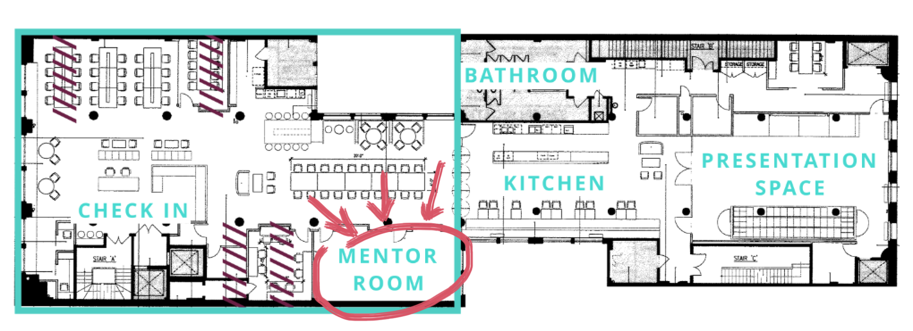

Mentor Room
Throughout the hackathon, mentors will be holding office hours in the mentor room.
Feel free to stop by and ask them any questions!
They are experts in iOS, Android, web, and hardware development.

On the floor
In addition to office hours, mentors will be walking around the space to meet the participants.
If you see a mentor, feel free to say hi! They are happy to talk about anything from the best part of their job to their favorite Beyoncé song.
You can refer to our mentors page to spot the mentors!
Team Formation
If you don't have a team before the hackathon -- don't worry! Team formation will occur in the kitchen after opening presentations.
You can either share your ideas by writing them down or by looking around for ideas that interest you.